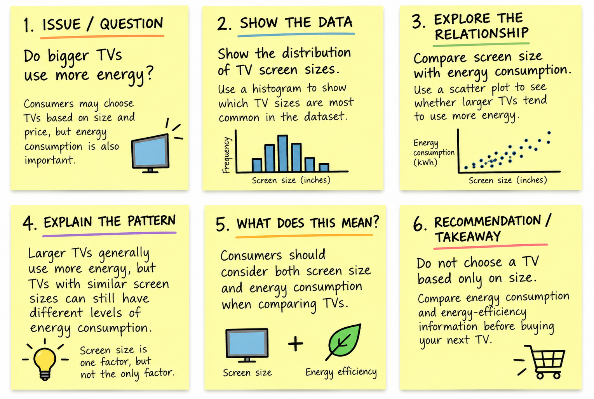
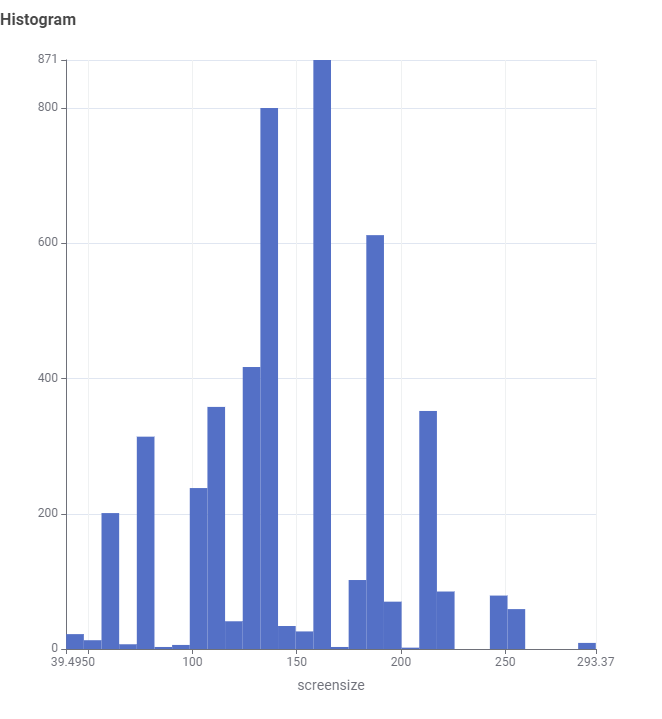

Data Source
The dataset contains information about television models and their energy consumption characteristics, including screen size and other TV specifications.
TV ENERGY CONSUMPTION
TVs come in many different sizes and models. This data story explores how television screen size relates to energy consumption and what this could mean when choosing a new TV.
Explore the Data ↓STORYBOARD
Before creating the visualisations, the story was planned around one main question: Do bigger TVs use more energy? The storyboard below shows how the issue, analysis and recommendation are connected.

The story begins by introducing the question about TV size and energy consumption. It then explores common TV sizes, compares screen size with energy use, explains the pattern found in the data and ends with a recommendation for consumers to consider energy efficiency when choosing a television.
PART 1
Before looking at energy consumption, it is useful to understand which television screen sizes appear most frequently in the dataset.

The chart shows how frequently different TV screen sizes appear in the dataset. Some screen sizes appear more often than others, which shows that the TV models in the dataset are concentrated around several common screen sizes.
PART 2
Screen size may affect how much electricity a television consumes. The next visualisation compares TV screen size with energy consumption to see whether there is a noticeable relationship between them.

The scatter plot compares television screen size with energy consumption. It allows us to see whether larger televisions generally use more energy. It also shows that TVs with similar screen sizes can still have different levels of energy consumption.
THE TAKEAWAY
Screen size can influence energy consumption, but televisions with similar screen sizes may still use different amounts of electricity.
Consumers should consider more than just screen size when comparing televisions. Energy consumption and energy-efficiency information can also help when deciding between TVs with similar specifications.
ABOUT THE DATA
The visualisations in this data story were created from the TV Energy Consumption dataset provided as part of the COS30045 course materials.
The dataset contains information about television models and their energy consumption characteristics, including screen size and other TV specifications.
The dataset was processed in KNIME before the visualisations were created. This included checking the data, selecting useful attributes and preparing values for analysis.
The dataset contains information about television products rather than individual people. It does not contain personal or sensitive information.
The dataset may not include every television available on the market. Some information may also become outdated as newer TV models and technologies are released.
The visualisations are presented clearly and without intentionally exaggerating differences in the data. The findings should be understood as patterns within this dataset rather than conclusions about every TV.